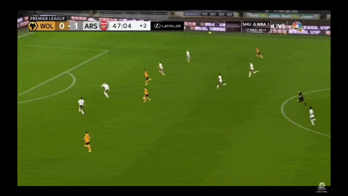

안녕하세요. 프리미어리그 24라운드에서 나온 두 판정에 관한 논란이 매우 컸었죠. 그와 더불어 프리미어 리그 심판들의 자질 논란도 불거졌습니다. 제가 부업으로 축구 심판을 하다보니 이런 논란이 큰 판정이 나오면 공부도 할겸 경기규칙서를 다시 읽곤 하는데 그러다가 이걸 글로 쓰면 좋을 거 같다 해서 이렇게 쓰게 됐습니다. (왜 이 카페에다 쓰냐구요? 제가 여기 밖에 활동을 안 해서 ㅋㅋ).
어쨋든 22라운드 경기이어서 꽤 늦은 감이 있지만, 아시는 분은 그냥 심판의 생각과정이 이렇구나 하고 넘기시면 되고 모르시는 분은 그 이유를 보시면 될 거 같습니다.. 그래서 심판의 처지에서 왜 이 판정이 옳았는가를 설명해보겠습니다.
일단 아셔야 할 것은 심판들은 경기 규칙서에 적힌 내용에 따라 판정을 해야 합니다. A라는 행동을 했을 때는 B이라는 판정으로 하는 것으로 돼 있으면 A라는 상황은 무조건 B라는 판정을 해야 한다 이런 뜻입니다. 흔히 말하는 상식, 융통성, 감정 등이 끼어들어서는 안 됩니다 (물론 경기의 중요도에 따라 다르긴 합니다만). 그래서 매년 모호한 규정은 항상 IFAB 회의를 거쳐 개정되죠 (대표적인 예가 핸드볼에 관한 규정입니다). 항상 판정이 나올 때 이점을 염두에 두시고 보셨으면 좋겠습니다.
다비드 루이스의 퇴장
해당 장면에서 루이스 선수는 그저 뒤쫓고 있었고 그 과정에서 윌리안 주제의 발과 루이스의 무릎 접촉이 있었고 윌리안 주제는 그 접촉으로 중심을 잃고 넘어졌습니다.
그럼 이제 규정집을 봅시다.
상대편의 전체적인 움직임이 반칙 선수의 골문을 향하여 움직일 때, 프리킥이 주어질 수 있는 반칙을 함으로써 득점 또는 명백한 득점 기회를 저지할 경우. (아래 단락 ‘득점 또는 명백한 득점 기회의 저지’ 항목에서 규정한 경고의 경우는 제외)
LAW 12 (Fouls and misconduct) 아래 퇴장성 반칙 문단
(여기서 말하는 경고의 경우는 명백히 공을 향한 도전이나 태클일 경우를 말합니다)
일단 하나하나 살펴봅시다.
첫째. 상황이 명백한 득점 기회였는가?
해당 상황은 윌리안 주제와 골키퍼의 1대1 상황이었기에 명백한 득점기회라고 볼 수 있습니다.
그럼 결과적으로 다비드 루이스는 자신의 무릎과 상대 공격수의 발의 접촉으로 명백한 득점 기회를 저지했습니다.
둘째. 수비수의 플레이가 명백히 공을 향한 도전/태클이었는가?
루이스의 플레이는 도전이나 태클이 아니었고 공을 향하지도 않았습니다.
그럼 규정에 따라 이 상황은 루이스의 퇴장에 페널티킥 선언이 옳습니다. 그러므로 당시 포슨 주심의 판정은 옳았다고 볼 수 있겠습니다.
이제 물론 사람들은 어떻게 이게 퇴장 감이냐 라고 물을 수도 있겠죠. 저 역시 저것이 퇴장 감이라고 생각하지 않습니다. 루이스가 접촉하고 싶어서 한 것도 아니고 진짜 운 없게 앞의 있는 공격수의 발이 제 무릎과 접촉한 것인데 말입니다. 그런데 어쩔 수 없습니다. 심판은 규정집에 따라 판정하게 돼 있기 때문이죠. 위 상황에서 할 수 있는 판정은 저 이외에 아무것도 없습니다. 솔직히 말하자면 꽤 쉬운 판정에 속한다고 생각합니다.
베드나렉의 퇴장

이 상황 역시 조금 전과 같은 규정에 해당합니다,
첫째. 상황이 명백한 득점 기회였는가?
보시면 마샬과 골키퍼와 1대1 상황이었으므로 명백한 득점 기회가 맞습니다.
둘째. 수비수의 플레이가 명백히 공을 향한 도전/태클이었는가?
전 상황과 마찬가지로 베드나렉의 플레이는 공을 향한 도전이나 태클이 아니었습니다.
그럼 정확한 판정은 베드나렉 선수의 퇴장에 페널티킥 선언이고 마이크 딘 주심 역시 이를 그대로 행했죠.
이 상황 역시 전과 같이 베드나렉은 분명 파울을 하지 않으려고 빠져나오는 상황이었는데 이게 어떻게 페널티킥이냐 라고 할 수 있습니다. 저 역시 베드나렉 선수가 지지리도 운이 없다고 생각합니다. 일단 파울에는 크게 두 가지 판정이 있습니다. 접촉이 있으면 직접 프리킥, 없으면 간접 프리킥. 그런데 위 상황에서는 명백히 베드나렉의 다리와 마샬의 다리에 접촉이 있었고 그 접촉이 마샬의 명백한 득점기회를 저지했으므로 퇴장 + 페널티킥이 맞습니다.
이 글을 마치면서
솔직히 심판의 입장에서는 위에 두 상황은 굉장히 간단한 판정에 속한다고 '전' 생각합니다. 이렇게 딱딱 규칙서에 나온대로 할 수 없는 것도 있거든요. 예를 들어 핸드볼이라든가 (이것도 개정을 통해서 굉장히 간단하게 바뀌었다고 생각합니다) 무모한 도전에 의한 경고 등이 있죠.
요즘 프리미어리그 심판들의 수준에 관한 논란이 꽤 많죠. 뭐 누군 심판자격이 없네 있네 말이죠. 그런데 저 같은 말단 입장에서 저들은 넘사벽 수준입니다. 그 누구 하나 자격이 딸리는 사람이 없다는 이야기입니다. 이미 그 수준까지 올라가기 위해서는 엄청난 노력과 실력이 겸비돼야 도달할 수 있습니다. 물론 진짜 오심도 있습니다만 그들도 인간이기 때문에 어쩔 수 없는 거죠. 저 역시 벤치나 관중석에서 많은 욕을 먹어서 저들의 기분을 조금이나마 헤아릴 수 있는 거 같습니다. 앞으로는 단순히 판정에 불만을 품고 욕을 하기보다는 왜 그런 판정이 나왔는가를 한 번 보고 이해가 가시면 문제 해결이고 안 됐으면 그 때 가서 욕을 해도 늦지 않으니까요. 한 번 경기 규칙서나 뭐 누가 설명해놓은 걸 보고 의견을 내셨으면 좋겠습니다.
혹시 관심 있으신 분들은 여기 한국어 경기규칙서 링크입니다. 이 밑에 링크에 있는 파일은 보기가 좀 불편해서 전 IFAB 경기규칙서 앱을 사용합니다.
https://www.kfa.or.kr/ img_src/data_rule/20_21_laws_of_the_game.pdf
저는 말단이라 설명에 틀린 것이 있을 수도 있으니 지적해주시거나 궁금한 것은 질문해주시면 감사하겠습니다. 이미 좀 많이 늦은 긴 글 읽어주셔서 감사합니다.